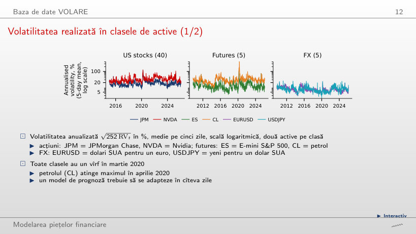
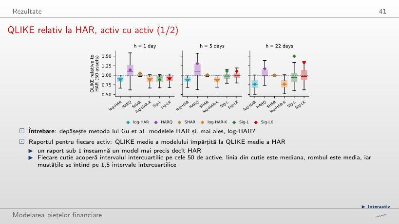
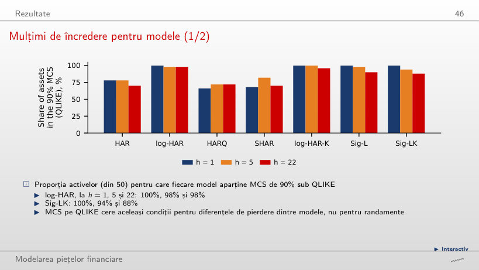
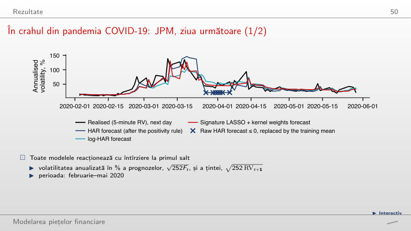
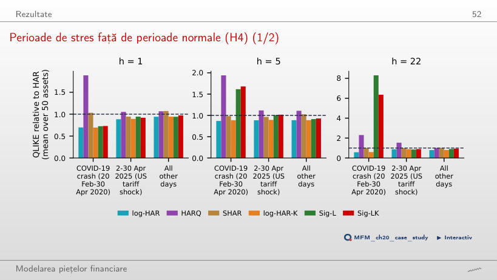
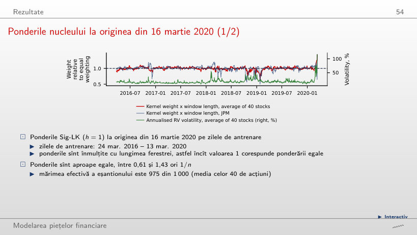
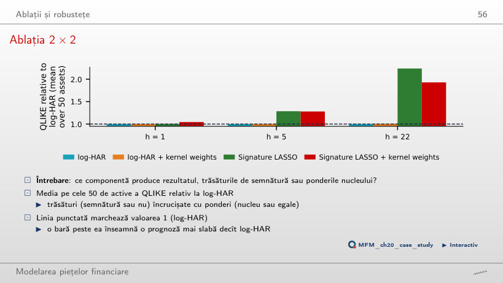
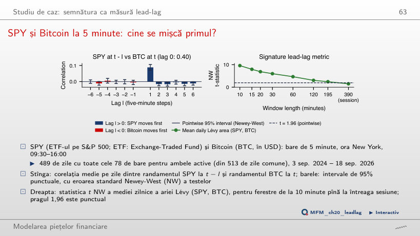

În stînga este slide-ul din curs, în dreapta aceeași figură, calculată în browser din aceleași date. Butonul ▶ modifică parametrul pas cu pas.
Baza de date VOLARE · Rezultate · Ablații și robustețe · Studiu de caz: semnătura ca măsură lead-lag
Baza de date VOLARE
Volatilitatea realizată în clasele de active

Răspuns
Scade, de la 458% (cinci zile încheiate pe 22 aprilie 2020) la 152% (65 de zile încheiate pe 3 iunie 2020). Media pe o fereastră mai lungă combină valorile extreme cu zile mai liniștite. Varianta „neschimbat” confundă seria netezită cu observațiile inițiale; „crește” confundă media cu suma. Cu media pe cinci zile, ES ajunge la 115% în martie, JPM la 111% și NVDA la 118%, iar EURUSD și USDJPY rămîn în jur de 20%. Volatilitatea mediană pe clasă este 17,1% la acțiuni, 19,7% la futures și 7,3% la FX.
Rezultate
QLIKE relativ la HAR, activ cu activ

Răspuns
Peste 1: media rapoartelor Sig-L/log-HAR este 1,004, deci Sig-L are o pierdere relativă ușor mai mare în acest eșantion; pentru Sig-LK, 1,045. La schimbarea reperului, pagina recalculează raportul fiecărui activ și apoi face media; nu împarte cele două medii. Valoarea 1 este garantată doar pentru reperul comparat cu el însuși. Față de HAR, mediile sînt 0,883 pentru log-HAR, 0,885 pentru log-HAR-K și 0,886 pentru Sig-L. Aceste medii nu sînt un test de semnificație.
Mulțimi de încredere pentru modele

Răspuns
Crește sau rămîne constantă. Pragul de eliminare α scade de la 0,10 la 0,01, iar pagina păstrează modelele cu p-value MCS peste prag, deci elimină mai puține. Pentru Sig-LK, proporțiile trec de la 100%, 94% și 88% la 100%, 100% și 100% la h = 1, 5 și 22; pentru log-HAR, de la 100%, 98% și 98% la 100%. Un nivel de încredere mai mare nu înseamnă o selecție mai restrictivă. Apartenența la MCS nu dovedește acuratețe egală: la 90%, cele patru modele logaritmice se separă rar, iar HAR, HARQ și SHAR sînt excluse pentru o cincime pînă la o treime dintre active.
În crahul din pandemia COVID-19: JPM, ziua următoare

Răspuns
Niciuna. La această origine, ținta pentru ziua următoare este aproximativ 139%, iar prognozele sînt 59% (HAR), 49% (log-HAR) și 60% (Sig-LK): toate subestimează puternic saltul. Reacția ulterioară ceva mai rapidă a Sig-LK la mijlocul lui martie și depășirea ulterioară a țintei de către HAR nu arată anticiparea acestui salt. Prognoza HAR brută devine negativă la sfîrșitul lui martie; graficul arată valoarea după regula de pozitivitate (media țintei în fereastra de antrenare), iar cele 7 origini înlocuite sînt marcate cu ×.
Perioade de stres față de perioade normale (H4)

Răspuns
Nu. Valoarea 0,73 arată un avantaj față de HAR; cu același reper, log-HAR are însă 0,70, deci rezultatele nu arată un avantaj suplimentar al Sig-LK. În celelalte zile, rapoartele sînt 0,94 (log-HAR) și 0,97 (Sig-LK). La h = 22, în același crah, Sig-LK are de 6,35 ori și Sig-L de 8,30 ori pierderea HAR. Rezultatele nu oferă sprijin descriptiv pentru H4; nu sînt un test formal al diferenței dintre perioade.
Ponderile nucleului la originea din 16 martie 2020

Răspuns
Scade, de la aproximativ 975 la 36 din 1 000. Ponderile sînt proporționale cu exp(−c δ / mediana lui δ), unde δ este distanța dintre ferestre: un c mai mare le concentrează pe distanțele mici. Numărul observațiilor rămîne 1 000; mărimea efectivă scade. Cu c = 0,5, ponderea medie rămîne între 0,61 și 1,43 ori 1/n; cu c = 8, între 0,10 și 157 ori 1/n. Ponderile cele mai mari revin ultimelor zile dinaintea originii, ale căror ferestre de 22 de puncte se suprapun cu fereastra curentă. Invarianța la translație nu înseamnă distanțe egale între ferestre.
Ablații și robustețe
Ablația 2 × 2

Răspuns
Nu: media scade de la 1,045 la 1,011, deci excluderea CL nu inversează clasamentul descriptiv. CL are raportul 2,71, dar efectul excluderii depinde și de celelalte 49 de rapoarte. Ponderile singure (log-HAR-K) dau 1,002, 1,002 și 1,004 față de log-HAR la h = 1, 5 și 22; Sig-L dă 1,004, 1,285 și 2,238; Sig-LK, 1,045, 1,280 și 1,929. Sig-L evaluează procedura cu semnături și selecție LASSO, deci diferența față de log-HAR nu poate fi atribuită exclusiv trăsăturilor.
Studiu de caz: semnătura ca măsură lead-lag
SPY și Bitcoin la 5 minute: cine se mișcă primul?

Răspuns
120 de minute: t NW ≈ 3,05 și p ajustat Holm ≈ 0,032. La 195 de minute, t NW ≈ 2,45 trece pragul punctual 1,96, dar p ajustat este 0,157. Varianta 10 minute confundă fereastra cu semnalul cel mai puternic (t = 9,6, aria pozitivă în 70% din zile) cu cea mai lungă fereastră semnificativă; 195 de minute folosește pragul punctual în locul corecției. Pe întreaga sesiune, t = 1,51. Corelația dintre SPY la t − 1 și BTC la t este 0,088 (t NW = 9,8), iar în sens invers −0,005. Cele 20 de teste (12 lag-uri și 8 ferestre) sînt exploratorii, iar rezultatul indică o asociere lead-lag, nu cauzalitate. Efectul slăbește în 2026: corelația la lag-ul +1 scade la 0,04.
Varianța realizată din baza de date VOLARE (Cipollini et al., 2026): 40 de acțiuni americane (2015–2026), 5 futures și 5 perechi valutare (2009–2026), randamente de 5 minute. Datele VOLARE sînt licențiate pentru cercetare și nu se redistribuie; aici apar doar rezumate: pierderile medii și valorile p ale MCS pe fiecare activ, ponderile și distanțele nucleului, medii pe cinci zile ale volatilității pentru cele șase active din slide (o valoare pe săptămînă) și prognozele JPM din februarie–mai 2020. Studiul de caz lead-lag folosește barele de 5 minute ale SPY și Bitcoin (EODHD, data/market/intraday): corelațiile încrucișate și ariile Lévy medii ale fiecărei zile.